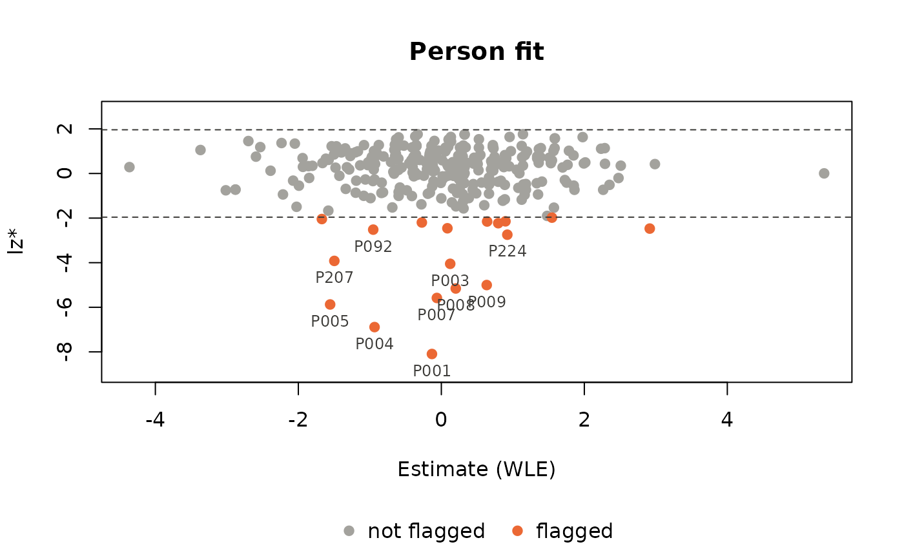
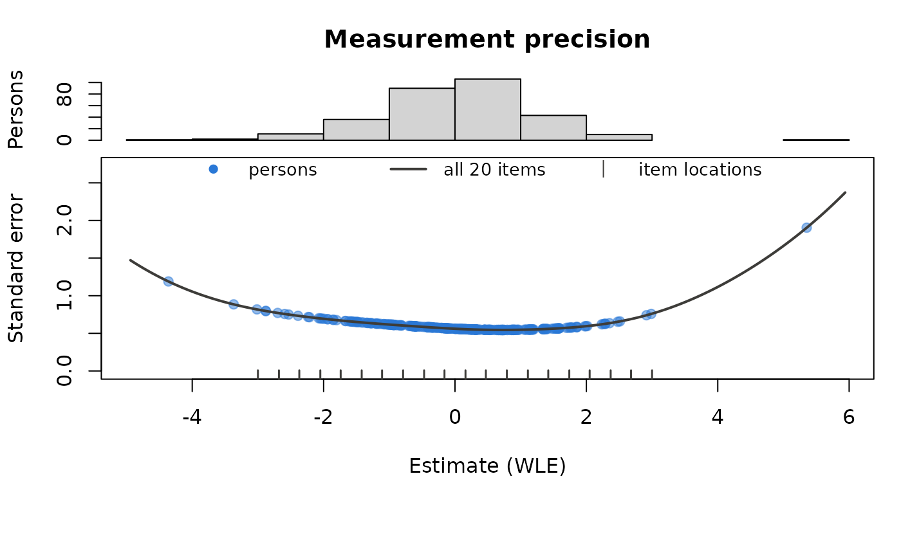
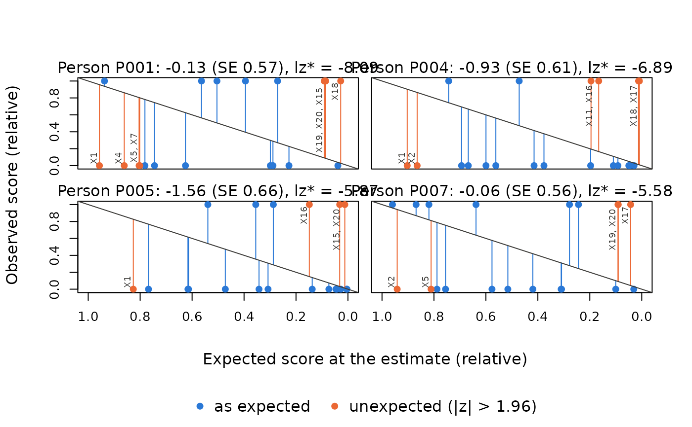
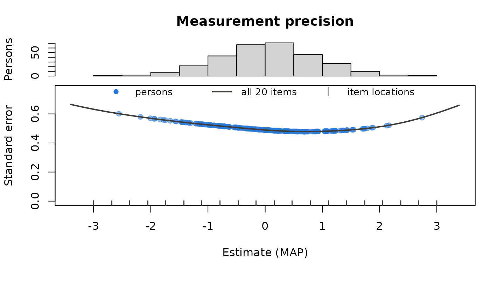
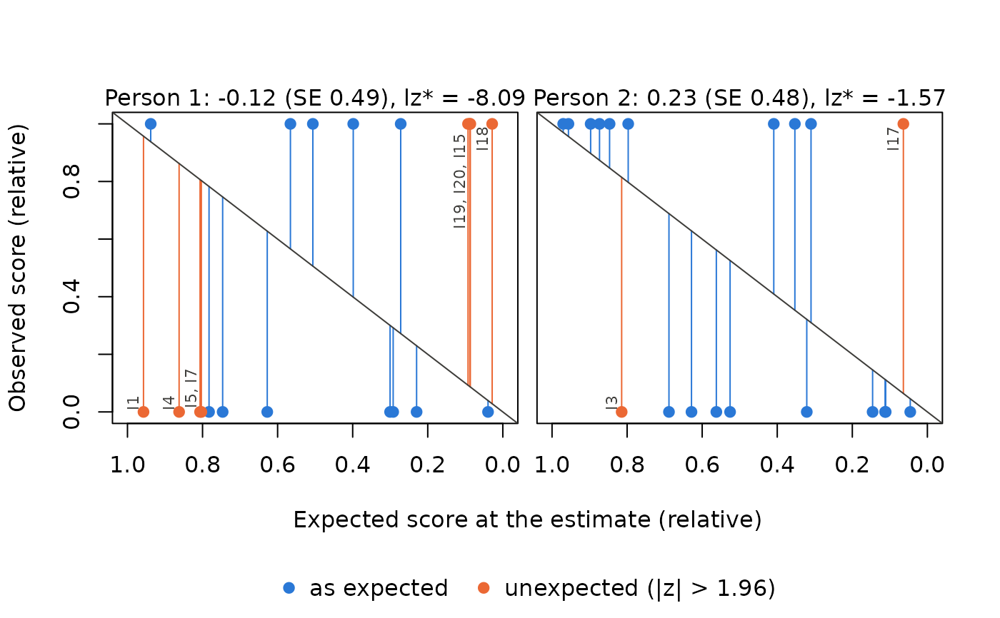

Three plots for the results of PPass(), PP_4pl(), PP_gpcm() and PPall(): a person fit map, the measurement precision of the test, and the response profiles of single persons.
Usage
# S3 method for class 'ppass'
plot(
x,
which = c("fit", "precision", "profile"),
person = NULL,
index = NULL,
alpha = 0.05,
label = NULL,
curve = NULL,
...
)
# S3 method for class 'ppeo'
plot(
x,
which = c("precision", "fit", "profile"),
person = NULL,
index = NULL,
alpha = 0.05,
curve = NULL,
...
)Arguments
- x
A result of
PPass()(classppass) or ofPP_4pl(),PP_gpcm()orPPall()(classppeo).- which
The plot:
"fit"(person fit map),"precision"(measurement precision) or"profile"(person profiles). The default is"fit"forPPassresults with person fit and"precision"otherwise.- person
For
which = "profile": the persons to show, as row positions. The default are the (at most 4) flagged persons with the strongest misfit: the lowest values of lz and lz*, the highest of the infit and outfit t.- index
The person fit statistic used to flag persons: one of
"lzstar","lz","in_t"and"ou_t". ForPPassresults the default is the first of these that was computed, for estimation results"lzstar"; for estimation results it is computed withPfit(), which needs an estimate of type"mle","wle"or"map".- alpha
Significance level: persons with \(|index| > z_{1-\alpha/2}\) are flagged, and responses with \(|z| > z_{1-\alpha/2}\) are unexpected.
- label
For
PPassresults: the name of a column ofx(e.g. an id) whose values label the persons. By default persons are labelled with their row position.- curve
For
which = "precision": draw the standard error curve of all items?NULL(default) draws it when every person answered every item (and, for MAP and EAP, all persons have the same prior variance).- ...
Further arguments for
tinyplot::tinyplot(), e.g.main,xlab,ylaborpalette.
Value
The plotted data, invisibly: for "fit" a data.frame with one row per plotted person (person, label, estimate, value of index, flagged); for "precision" a list with the data.frames persons (person, estimate, SE), curve (theta, info, SE; NULL without curve) and items (item, location); for "profile" a data.frame with one row per answered item and person (person, item, response, max, expected, z, unexpected).
Details
Person fit map (which = "fit"): the person fit statistic index against the estimate, one point per person with status "ok". The dashed lines are the critical values \(\pm z_{1-\alpha/2}\); persons beyond them are flagged (the same rule as in summary() of a PPass result), and the at most 10 most extreme ones are labelled.
Measurement precision (which = "precision"): the upper panel shows the distribution of the estimates, the lower panel the standard error of each person against the estimate. Because the item parameters are known, the standard error of the whole test follows from the test information \(I(\theta)\), the sum of the item informations: \(1/\sqrt{I(\theta)}\), and \(1/\sqrt{I(\theta) + 1/\sigma^2}\) for MAP and EAP estimates with the prior variance \(\sigma^2\). This curve is drawn when every person answered every item (curve = NULL); in incomplete or adaptive designs each person has an own set of items, and the curve of all items holds for nobody. The ticks at the bottom mark the location of each item, the ability at which it gives the most information (for the 1PL and 2PL its difficulty). The plot shows where the test measures accurately and whether the persons are located there. For robust estimates the curve is the model standard error without the Huber weights; for EAP estimates the standard error is the posterior SD.
Person profile (which = "profile"): one panel per person in person. Each answered item is a point: the expected score at the estimate (x axis, relative to the maximum score of the item, easy items on the left) against the observed score (y axis, relative to the maximum score). Responses in line with the model lie close to the diagonal. Items with a standardised residual \(|z| = |x - E|/\sqrt{V}\) above \(z_{1-\alpha/2}\) are marked as unexpected and labelled with the item name: a wrong answer to an easy item at the bottom left, a right answer to a hard item at the top right. The profile shows which responses make a person conspicuous. The panel title gives the estimate, its standard error and the fit statistic index.
The plots are drawn with the tinyplot package, so a theme set with tinyplot::tinytheme() applies to them.
Examples
set.seed(1337)
diffpar <- seq(-3, 3, length = 20)
sl <- round(runif(20, 0.5, 1.5), 2)
awm <- sim_4pl(beta = diffpar, alpha = sl, lowerA = rep(0, 20), upperA = rep(1, 20),
theta = rnorm(300))
# 10 persons answer at random
awm[1:10, ] <- matrix(rbinom(200, 1, 0.5), 10)
dat <- data.frame(id = sprintf("P%03d", 1:300), awm)
res <- PPass(dat, items = 2:21, thres = diffpar, slopes = sl)
# who does not fit?
plot(res, label = "id")

# where does the test measure accurately, and are the persons there?
plot(res, which = "precision")

# which responses make the flagged persons conspicuous?
plot(res, which = "profile", label = "id")

# the same plots for an estimation result
est <- PP_4pl(respm = awm, thres = diffpar, slopes = sl, type = "map")
plot(est)

plot(est, which = "profile", person = 1:2)
